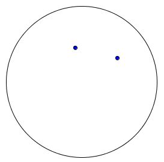

Steps
How to's
Examples
>Step 1

Step 2
Step 3

Step 4

Drawing is something that is really important to me. It's something that allows
anyone to express their feelings and be creative. This is why this website will
teach you how to draw
Steps |
How to's |
Examples> |
|---|---|---|
Step 1 |
Draw a circle | |
Step 2 |
Draw 2 dots inside the circle that are next to each other |  |
Step 3 |
Draw a u-shaped line underneath the 2 dots - still insiide the circle | |
Step 4 |
Add details |
|